Binomial, Permutasi & Kombinasi
Pelajari konsep-konsep dasar pencacahan: faktorial, teorema binomial beserta variasi tipe soalnya (Uraian Lengkap, Mencari Suku ke-n, Koefisien, dan Jumlah Koefisien), serta dasar permutasi dan kombinasi.
1. Faktorial
Sebelum melangkah lebih jauh ke dalam kombinatorika dan Teorema Binomial, kita perlu memahami konsep dasar **Faktorial**. Faktorial digunakan untuk menghitung banyaknya cara menyusun objek.
Untuk setiap bilangan bulat positif \(n\), faktorial dari \(n\) (ditulis sebagai \(n!\)) didefinisikan sebagai hasil perkalian semua bilangan bulat positif dari \(1\) hingga \(n\): \[ n! = n \times (n-1) \times (n-2) \times \dots \times 2 \times 1 \]
- \(0! = 1\) (Didefinisikan secara khusus agar rumus kombinasi dan permutasi tetap konsisten)
- \(1! = 1\)
Contoh Penggunaan Faktorial
Berikut adalah penjelasan visual dan contoh operasi matematika yang menggunakan faktorial sebagaimana dimuat dalam modul kuliah:
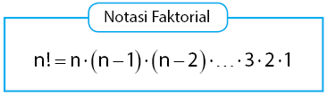
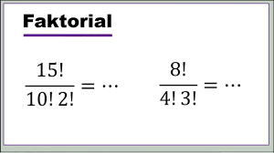
2. Binomial (Teorema Binomial)
**Teorema Binomial** adalah formula matematika yang digunakan untuk menjabarkan atau mengekspansikan bentuk perpangkatan aljabar binomial seperti \((x+y)^n\).
Pola Ekspansi Perpangkatan
Perhatikan pola ekspansi aljabar berikut saat pangkatnya bertambah:
- \((x+y)^0 = 1\)
- \((x+y)^1 = x + y\)
- \((x+y)^2 = x^2 + 2xy + y^2\)
- \((x+y)^3 = x^3 + 3x^2y + 3xy^2 + y^3\)
- \((x+y)^4 = x^4 + 4x^3y + 6x^2y^2 + 4xy^3 + y^4\)
Koefisien-koefisien di atas membentuk pola segitiga yang dikenal sebagai **Segitiga Pascal**. Koefisien pada baris ke-\(n\) dapat dicari secara langsung menggunakan kombinasi.
Secara umum, ekspansi bentuk \((x+y)^n\) dirumuskan sebagai: \[ (x+y)^n = \sum_{k=0}^{n} C(n,k) \cdot x^{n-k} \cdot y^k \] di mana koefisien binomial menggunakan kombinasi: \[ C(n,k) = \binom{n}{k} = \frac{n!}{k!(n-k)!} \]
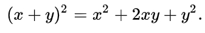
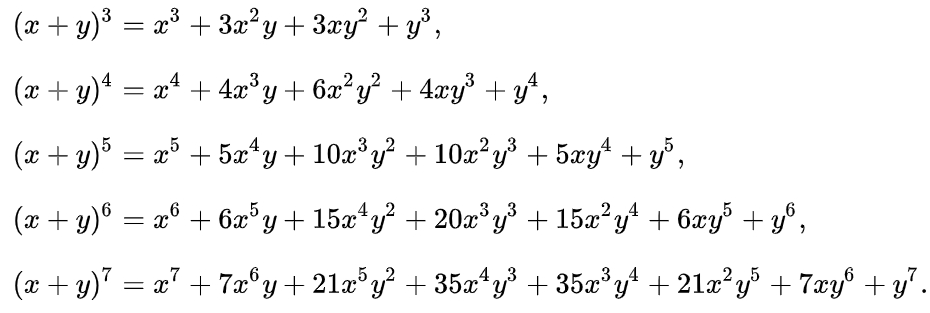
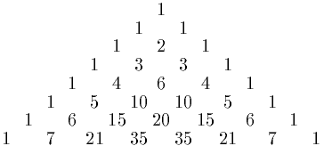
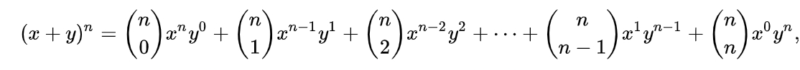
Tipe 1: Uraian Lengkap
Pada tipe soal ini, Anda diminta menjabarkan secara lengkap bentuk aljabar binomial pangkat \(n\).
Uraikan secara lengkap bentuk aljabar berikut menggunakan Teorema Binomial:
Gunakan rumus ekspansi binomial untuk \(n = 5\). Suku-sukunya terbentuk dari \(\sum_{k=0}^{5} C(5,k) x^{5-k} y^k\).
Substitusikan nilai koefisien kombinasi: \(1, 5, 10, 10, 5, 1\):
Uraikan secara lengkap ekspansi binomial yang diberikan pada lembar soal berikut:
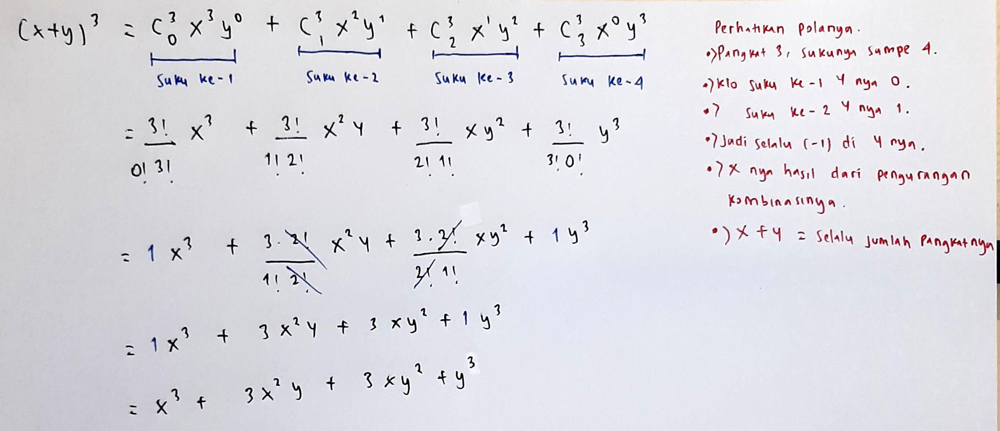
Perhatikan catatan penting: Pada proses perhitungan perkalian pangkat di PDF asli, terdapat kesalahan ketik. Suku yang benar seharusnya mengandung nilai \(27x^3\). Pastikan Anda melakukan verifikasi perkalian pangkat dengan teliti.
Tipe 2: Mencari Suku ke-n
Tipe soal ini meminta Anda mencari suku tertentu (misalnya suku ke-\(4\) atau suku ke-\(6\)) tanpa perlu menguraikan seluruh bentuk perpangkatan secara lengkap.
Suku ke-\((r+1)\) dari ekspansi \((a+b)^n\) dirumuskan sebagai: \[ T_{r+1} = C(n, r) \cdot a^{n-r} \cdot b^r \] Jika diminta mencari suku ke-\(k\), maka nilai \(r\) yang digunakan adalah: \[ r = k - 1 \]
Tentukanlah suku ke-4 dari uraian bentuk aljabar berikut:
Langkah-langkah Penyelesaian:
- Binomial: \((a + b)^n \Rightarrow (x - y)^5\), maka \(a = x\), \(b = -y\), dan \(n = 5\).
- Ditanyakan suku ke-4, maka \(r+1 = 4 \Rightarrow r = 3\).
- Masukkan ke rumus suku: \[ T_4 = C(5, 3) \cdot (x)^{5-3} \cdot (-y)^3 \]
- Hitung nilai kombinasi \(C(5,3)\): \[ C(5,3) = \frac{5!}{3! \cdot 2!} = 10 \]
- Sederhanakan hasilnya: \[ T_4 = 10 \cdot x^2 \cdot (-y^3) = -10x^2y^3 \]
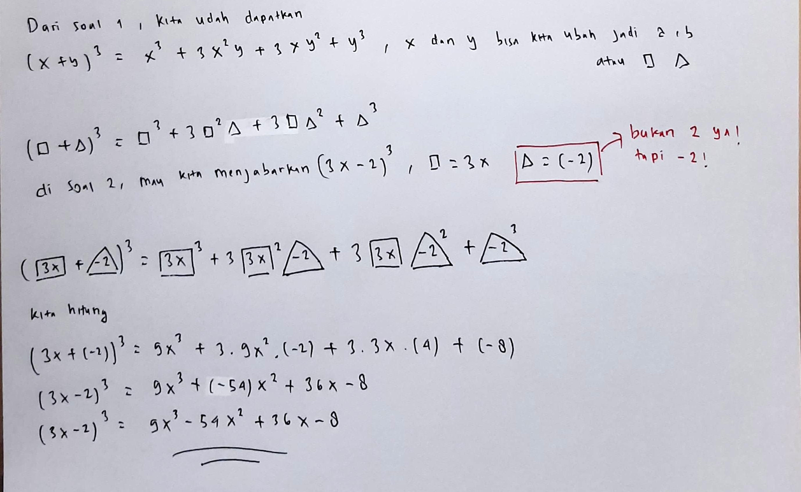
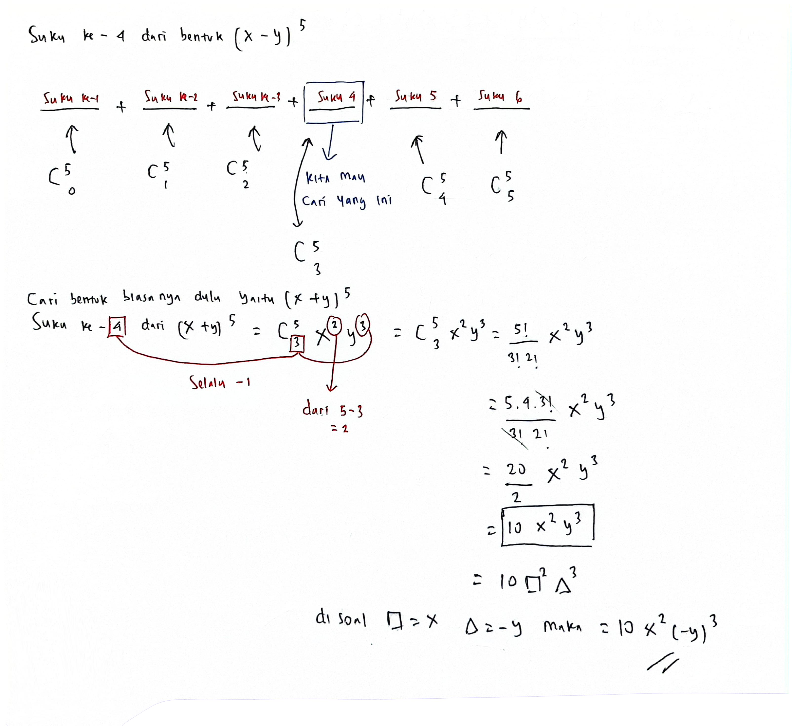
Tentukan suku tertentu dari ekspansi binomial sesuai dengan materi di bawah ini:
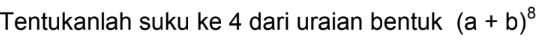
Sesuai dengan penjabaran Gambar 2.5, pencarian suku spesifik dilakukan dengan menentukan terlebih dahulu nilai pangkat \(r\) dari suku kedua binomial agar sesuai dengan variabel yang diinginkan, kemudian menerapkan rumus suku umum \(T_{r+1}\).
Tentukan suku spesifik aljabar yang ditunjukkan pada materi kuliah berikut:
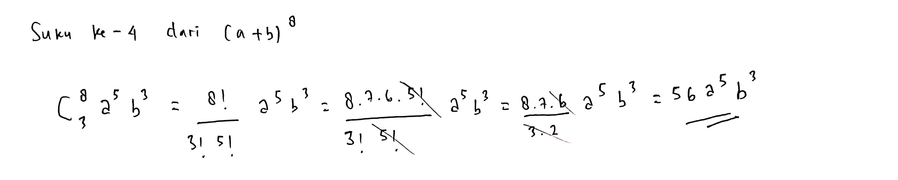
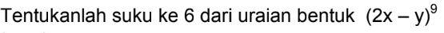
Di dalam pengerjaan lembar asli (Gambar Solusi 5), terdapat kesalahan fatal pada operasi perpangkatan: \[ 2^4 = 18 \quad (\text{Salah, seharusnya } 2^4 = 16) \] Akibatnya hasil perkalian akhirnya salah. Nilai yang benar adalah: \[ 126 \times 16 \times (-1) = -2016 \] Sehingga suku yang benar adalah \(-2016x^4y^5\).
Soal Latihan Mandiri: Terapkan konsep pencarian suku ke-\(n\) menggunakan formula umum \((r+1)\) di atas untuk menyelesaikan tipe soal ini secara mandiri guna menguji pemahaman Anda.
Identifikasi variabel pertama sebagai \(a\) dan variabel kedua beserta tandanya (+/-) sebagai \(b\). Tentukan nilai \(n\) dari pangkat luar, lalu hitung suku yang ditanyakan dengan menetapkan \(r = \text{nomor suku} - 1\).
Tipe 3: Koefisien
Tipe soal ini meminta Anda mencari **hanya koefisien angka** dari variabel tertentu dalam hasil ekspansi binomial.
Tentukan koefisien dari suku aljabar yang diberikan pada lembar soal berikut:
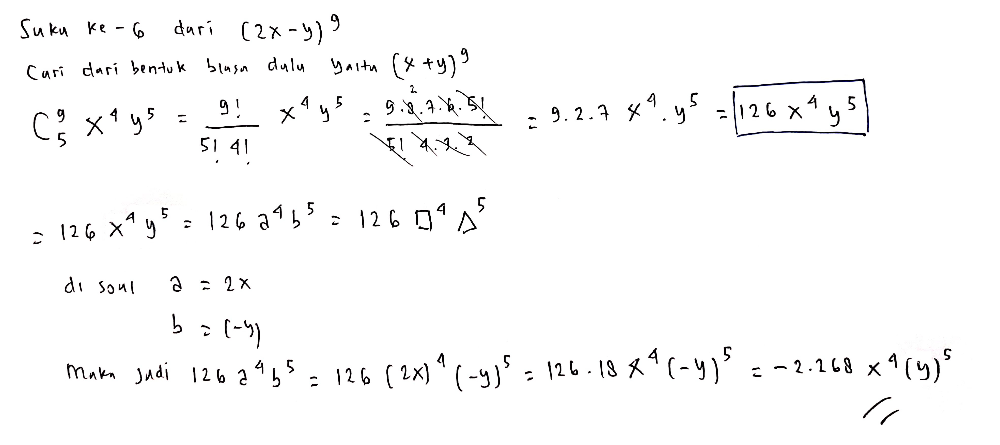
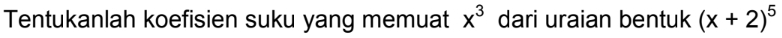
Hitung koefisien untuk suku spesifik berdasarkan soal di bawah ini:
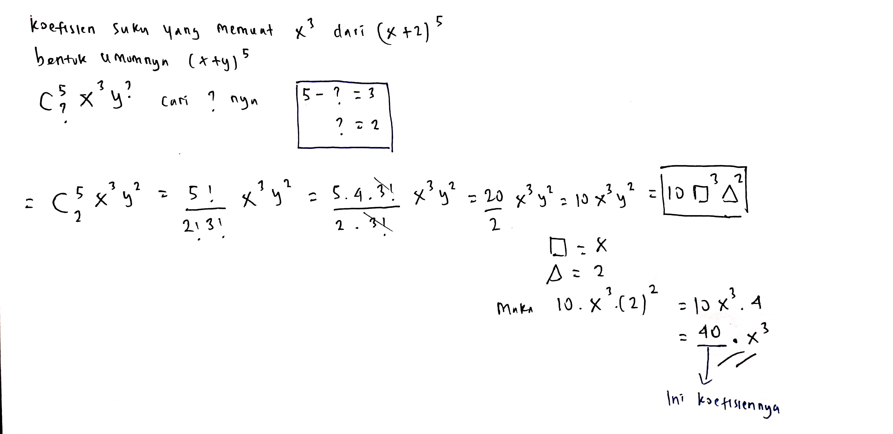
Sesuai dengan solusi pada Gambar 2.6, kita tentukan nilai kombinasi indeks \(r\) terlebih dahulu agar pangkat variabel di akhir sama dengan variabel yang dicari koefisiennya.
Tentukan koefisien variabel dari soal di bawah ini:
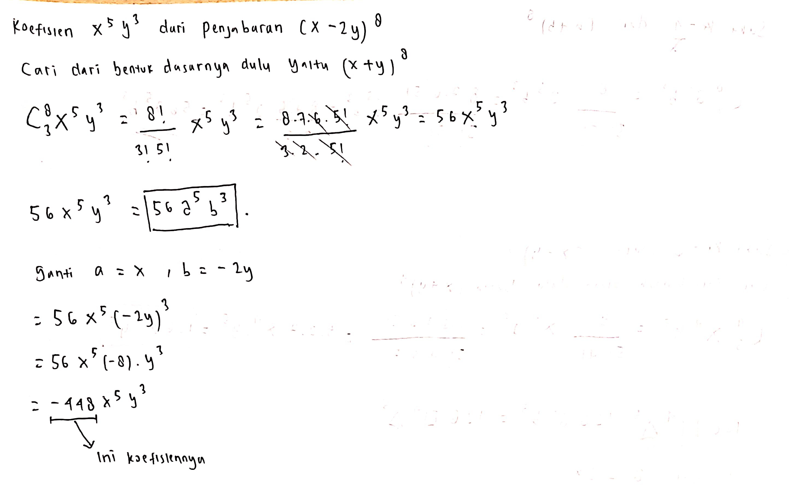
Selesaikan soal mencari koefisien pada kasus berikut:
Tipe 4: Jumlah Koefisien
Tipe soal ini menanyakan **jumlah dari semua koefisien** hasil ekspansi aljabar. Anda tidak perlu menjabarkannya satu per satu.
Untuk mencari jumlah koefisien dari ekspansi \((ax + by)^n\), Anda cukup mengganti/mensubstitusi semua variabel dengan nilai \(1\) (yaitu \(x = 1\) dan \(y = 1\)).
Hitunglah jumlah koefisien dari ekspansi binomial berikut:
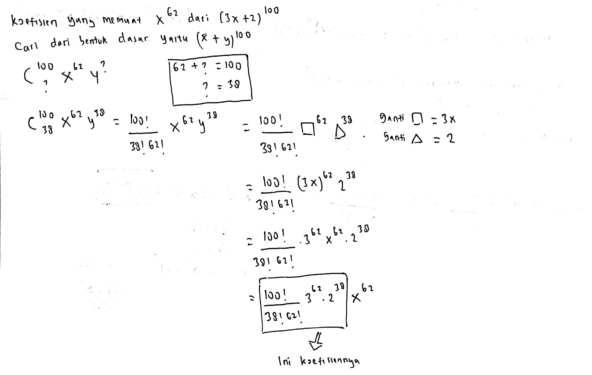
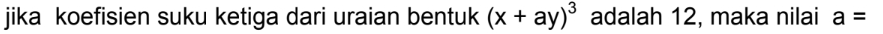
3. Permutasi
**Permutasi** adalah cara menyusun sekumpulan objek ke dalam suatu urutan tertentu dengan **sangat memperhatikan urutannya** (Urutan berpengaruh, di mana susunan \(AB \neq BA\)).
Banyaknya permutasi dari \(n\) objek yang diambil sebanyak \(r\) objek dirumuskan dengan: \[ P(n,r) = \frac{n!}{(n-r)!} \] di mana \(r \le n\).
Video Pembelajaran Permutasi
Untuk penjelasan konsep permutasi secara mendalam, Anda dapat menonton video dari Dosen STEI ITB, Pak Rinaldi Munir:
🎥 Tonton Aturan Permutasi di YouTube- Materi Tertulis: 03-Aturan Permutasi [www.defantri.com].pdf
- Latihan Soal Mandiri: 04-Latihan 03-Aturan Permutasi [www.defantri.com].pdf
4. Kombinasi
**Kombinasi** adalah proses pemilihan objek dari suatu kumpulan **tanpa memperhatikan urutannya** (Urutan tidak berpengaruh, di mana susunan \(AB = BA\)).
Banyaknya kombinasi dari \(n\) objek yang diambil sebanyak \(r\) objek didefinisikan sebagai: \[ C(n,r) = \binom{n}{r} = \frac{n!}{r!(n-r)!} \]
Perbedaan Permutasi vs Kombinasi
Membedakan permutasi dan kombinasi sangatlah krusial dalam menyelesaikan soal-soal matematika diskrit:
| Karakteristik | Permutasi | Kombinasi |
|---|---|---|
| Urutan | Diperhatikan (\(AB \neq BA\)) | Diabaikan (\(AB = BA\)) |
| Konsep Utama | Pengaturan / Penyusunan (Arrangement) | Pemilihan / Pengambilan (Selection) |
| Kata Kunci Soal | Menyusun pengurus (Ketua-Wakil), nomor antrean, urutan posisi duduk | Memilih anggota delegasi, mengambil kelereng, berjabat tangan |
| Rumus | \(P(n,r) = \frac{n!}{(n-r)!}\) | \(C(n,r) = \frac{n!}{r!(n-r)!}\) |
Video Pembelajaran Kombinasi
Berikut adalah pembahasan mendalam mengenai aturan kombinasi oleh Pak Rinaldi Munir (STEI ITB):
🎥 Tonton Aturan Kombinasi di YouTube- Materi Tertulis: 05-Aturan Kombinasi [www.defantri.com].pdf
- Latihan Soal Mandiri: 06-Latihan 05-Aturan Kombinasi [www.defantri.com].pdf